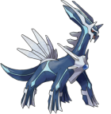
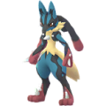
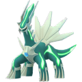

포켓몬고 디아루가 레이드 약점 정리, 추천 카운터와 졸업스킬 포획 팁까지
포켓몬고 5성 레이드에 지금 '디아루가'가 나오고 있는데요, 10월 14일 수요일에 시작해서 10월 20일 화요일까지 이어지는 로테이션이라 오늘 10월 16일이면 벌써 3일차예요. 먼저 답부터 말씀드리면 디아루가는 강철·드래곤 타입이라 격투·땅 기술에 1.6배 피해를 받아요. 남은 날짜는 나흘 정도뿐이라 아직 한 번도 못 돌리신 분들은 슬슬 파티를 정해 두셔야 하거든요. 저도 이번 주 레이드 목록을 보면서 카운터를 다시 줄 세워 보는 중이에요. 이번엔 같은 기간에 메가 망나뇽 레이드도 같이 도는 터라 마음이 더 바쁘더라고요. 10월 14일 레이드 아워는 이미 지나갔지만 디아루가 레이드 자체는 20일까지 계속되니, 오늘은 약점과 추천 카운터, 졸업스킬, 포획 팁에 내 포켓몬으로 갈 수 있는지 따져 보는 체크까지 한 번에 풀어 볼게요. 카운터 정보는 2026년 10월 기준이에요.

이번 주 5성 레이드 보스, 디아루가예요.
이미지 출처: Serebii.net · 네이버 본문엔 원본 큰 사이즈로 받아서 재업로드 권장
디아루가 약점이 뭔가요
디아루가는 강철·드래곤 타입이라 격투와 땅 타입 공격에 1.6배 피해를 받아요. 타입이 두 개 겹쳤는데도 약점은 이 둘뿐이잖아요. 그래서 두 타입 기술만 제대로 맞춰도 레이드 시간이 확 줄어들어요. 눈이나 강풍 날씨가 되면 디아루가가 날씨 부스트를 받는다는 점도 같이 기억해 두시는 게 좋아요. 반대로 아래 타입은 잘 안 들어가니 카운터로 데려가지 않는 게 좋습니다.
- 약점 — 격투·땅 타입 공격 1.6배 피해
- 내성 — 풀·독 타입 공격은 피해가 39.1% 수준
- 내성 — 벌레·전기·비행·노말·에스퍼·바위·강철·물 타입 공격은 피해가 62.5% 수준
추천 카운터는 누구로 가면 되나요
디아루가 카운터는 격투·땅 타입에서 고르는 게 정답이고, 2명 기준으로는 메가 뮤츠X·메가 루카리오·메가 번치코·원시 그란돈 쪽이 상위권이에요. 아래 표는 40레벨 베스트 프렌드 2명 기준인데요, 기술 이름 뒤에 붙은 *는 대단한 기술머신으로 배우는 기술이고 **는 전용기예요. 그리고 +가 붙은 기술은 메가진화했을 때 쓰는 추가 기술이에요. 대단한 기술머신이 없으면 *가 붙은 조합은 만들 수 없으니 그 줄은 건너뛰고 다른 줄을 보시면 돼요.
흐린 날 추천
| 포켓몬 | 1차 기술 | 2차 기술 |
|---|---|---|
| 메가 뮤츠X | 카운터* | 폭발펀치+ |
| (메가)루카리오 | 발경* | 파동탄 |
| 메가·그림자 번치코 | 카운터 | 파동탄 |
| 케르디오 각오의모습 | 안다리걸기 | 신비의칼 |
| 메가 대여르 | 카운터 | 깨트리기+ |
| 메가 엘레이드 | 안다리걸기 | 성스러운칼 |
| 메가 헤라크로스 | 카운터 | 인파이트 |
| 테라키온 | 두번차기 | 성스러운칼* |

흐린 날 상위권, 메가 루카리오예요.
이미지 출처: Serebii.net · 네이버 본문엔 원본 큰 사이즈로 받아서 재업로드 권장
맑은 날 추천
| 포켓몬 | 1차 기술 | 2차 기술 |
|---|---|---|
| (원시·그림자)그란돈 | 머드샷 | 단애의칼** |
| 메가 한카리아스 | 머드샷 | 대지의힘* |
| 랜드로스 영물폼 | 머드샷 | 열사의폭풍* |
| 메가 마폭시 | 회오리불꽃 | 매지컬플레임+ |
맑은 날엔 원시 그란돈이 든든해요.
이미지 출처: Serebii.net · 네이버 본문엔 원본 큰 사이즈로 받아서 재업로드 권장
보유한 포켓몬에 따라 우선순위를 잡으면 이렇게 가면 돼요. 날씨 부스트가 붙으면 해당 타입 기술이 더 세져요. 그래서 표를 흐린 날과 맑은 날로 나눠 뒀으니 오늘 날씨에 맞는 쪽을 보시는 게 좋습니다. 딜량만 따로 놓고 보면 케르디오를 100으로 잡았을 때 메가 루카리오 Z가 131%로 가장 높고 메가 뮤츠X가 129%, 메가 루카리오가 114%, 메가 번치코가 112% 정도로 나와서, 격투 메가들이 상위권을 차지한다고 보시면 돼요.
- 1순위 — 메가 뮤츠X가 있으면 제일 먼저 투입
- 2순위 — 메가 루카리오, 메가 번치코(그림자 번치코도 가능)
- 3순위 — 그란돈 계열(원시·그림자), 맑은 날에 특히 좋아요
- 4순위 — 케르디오, 메가 엘레이드 같은 격투 타입 메가·전설
졸업스킬은 뭘로 맞추면 되나요
카운터의 졸업스킬은 루카리오가 발경과 파동탄, 그란돈이 머드샷과 단애의칼, 번치코가 카운터와 파동탄이에요. 단애의칼이 없는 그란돈이면 획득 경로는 게임 안에서 먼저 확인해 보시는 게 좋아요. 여기서 졸업스킬이라는 건 카운터가 쓰는 마지막 2차기를 말해요. 한편 디아루가를 잡고 나서 직접 굴려 보고 싶은 분들이 많은데, 디아루가 자체 조합은 이렇게 나뉘어요.
| 디아루가 기술 조합 | 특징 | DPS |
|---|---|---|
| 메탈클로 + 용성군 | 종합 1위 | 17.12 |
| 용의숨결 + 용성군 | 드래곤계 최대 | 16.19 |
| 메탈클로 + 아이언헤드 | 강철계 최대 | 15.22 |
위 DPS는 디아루가를 직접 굴릴 때의 수치라 카운터 표와 곧바로 견줄 숫자는 아니에요. 솔직히 말씀드리면 이 조합은 해외 데이터에서도 레이드용으로는 추천하지 않는다는 얘기가 같이 나와요. 사탕이랑 XL을 쏟아부을 카운터라기보다 오리진폼으로 가는 발판 정도로 보시는 게 마음 편해요. 시간의포효는 오리진폼 전용 기술이라 이번 레이드 디아루가와는 상관이 없고요.
포획 팁, 날씨랑 커브볼이 핵심이에요
디아루가는 골든 라즈베리를 먹이고 커브볼로 던지는 게 가장 안정적이고, 눈이나 강풍 날씨에 만나면 포획 CP가 더 높게 나와요. 날씨 부스트가 없으면 아래 범위보다 낮게 잡힌다는 점도 참고하시는 게 좋아요.
- 일반 포획 CP — 2217~2307
- 날씨 부스트(눈·강풍) 포획 CP — 2771~2884
조준 링이 작아졌을 때 던지면 커브볼 성공률이 올라가요.
이로치 디아루가도 운이 좋으면 만날 수 있는데, 정확한 확률은 공식 발표가 없어 알 수 없고 5% 안팎이라는 얘기가 있으니 참고만 하시는 게 좋아요.

이로치 디아루가는 초록빛이 도는 색이에요.
이미지 출처: Serebii.net · 네이버 본문엔 원본 큰 사이즈로 받아서 재업로드 권장
내 포켓몬으로 디아루가 레이드 갈 수 있을까요
표에 있는 격투·땅 카운터 중 기술 조합까지 맞는 포켓몬이 있으면 2명으로도 도전해 볼 만하고, 없으면 인원을 늘려 가는 게 마음 편해요. 직접 따져 보실 수 있게 상황별로 나눠 볼게요. 표는 2명 기준이라 3명 이상이면 조금 더 여유가 생기는 정도로만 받아들이시고, 내 포켓몬 상태부터 하나씩 대 보시는 게 좋아요.
- 메가 뮤츠X·메가 루카리오·메가 번치코 중 하나가 메가진화 후 표의 기술 그대로 있다 — 2명 도전 후보예요.
- 포켓몬은 있는데 *가 붙은 기술이 없다 — 그 조합은 못 만드니 다른 카운터를 먼저 보세요.
- 표의 포켓몬이 하나도 없다 — 안전하게 가려면 4명 안팎으로 모으는 분이 많아요.
- 메가 에너지가 빠듯하다 — 메가 망나뇽 레이드와 같은 주간이라 어느 쪽에 쓸지 먼저 정해 두세요.
내 카운터 기술이 표와 맞는지 이 화면에서 보시면 돼요.
자주 묻는 질문
Q. 디아루가 다음에는 어떤 레이드가 나오나요?
10월 21일부터 27일까지 펄기아 5성 레이드가 열리고 21일 수요일 저녁에는 레이드 아워도 있어요. 10월 28일부터 11월 3일까지는 기라티나 오리진폼이 5성 레이드에 나온답니다.
Q. 같이 도는 메가 망나뇽 레이드는 어떤가요?
같은 기간에 메가 레이드로 함께 진행돼요. 포획 CP는 일반이 2079~2167이고 바람 날씨 부스트를 받으면 2599~2709까지 올라가니, 디아루가와 같은 날 날씨를 같이 보고 순서를 정하시면 좋아요.
Q. 그림자 몰드류도 카운터로 쓸 만한가요?
해외 시뮬레이션에서는 12위로 이름이 올라 있어요. 상위권 카운터가 없을 때 자리를 채우는 정도로 생각하시면 돼요.
제 판단으로는 졸업스킬까지 갖춘 격투 메가 카운터가 하나라도 있다면 2명으로도 해볼 만하다고 봐요. 한 줄로 디아루가 레이드 정리하면, 강철·드래곤이라 격투·땅 카운터를 표와 맞춰 보고 20일 화요일 전에 한 번 돌려 보시면 되고, 이로치까지 만나시길 바랄게요.
✔ 포켓몬 GO 같이 보기 좋은 내용
· 포켓몬고 지가르데 셀 루트 완료 리워드로 받는 법, 맵에서 안 모아도 되고 확률은 그대로
· 포켓몬 GO 깜눈크 부화데이 10월 17일 11시부터 17시, 알 부화 거리 절반 보너스 챙기는 법
· 포켓몬고 그푸리 처음 만나는 법, 가을 소풍 GO패스 패스 태스크와 향로 출현 기간 10월 13일부터
참고한 곳 (2026.10.16 기준)
· Leek Duck 레이드 보스 목록
· 포케토리 디아루가 레이드 공략
· Pokémon GO Hub 디아루가 도감